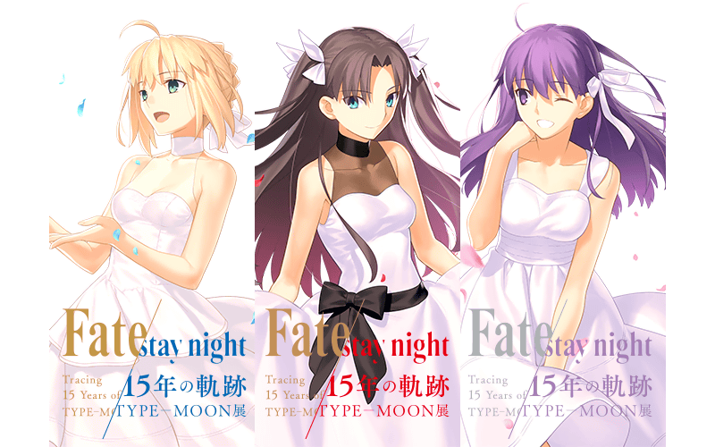
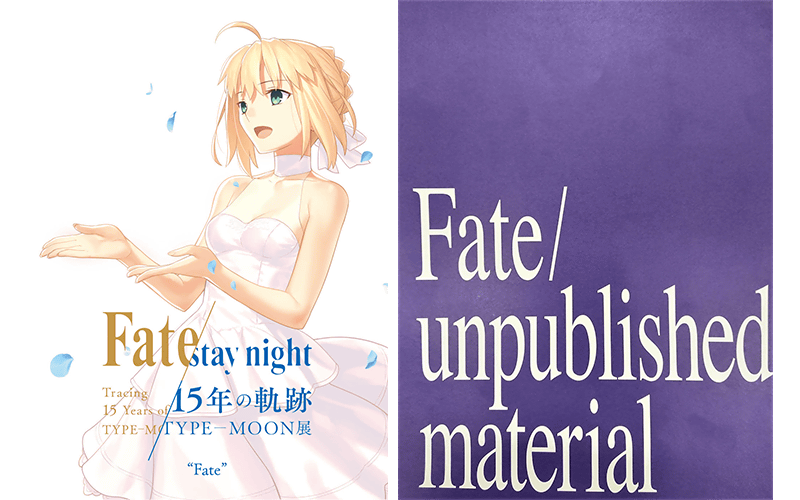
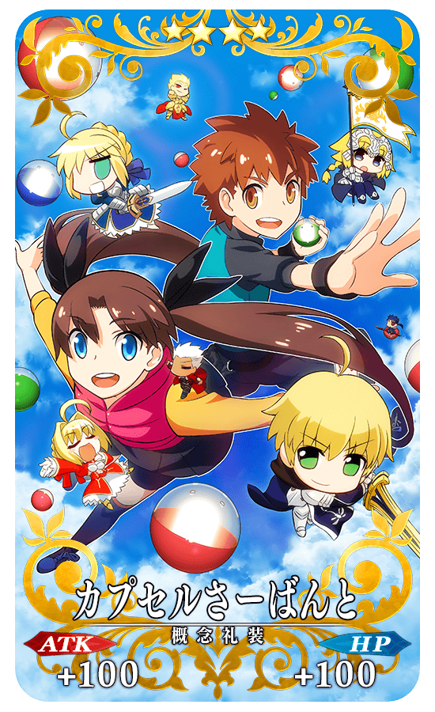

做為「Fate/stay night 15th Celebration Project」的一環，從2019年12月20日(五)舉辦「TYPE-MOON展 Fate/stay night -15年的軌跡-」！
為了記念，舉辦『「Fate/stay night」15周年記念宣傳活動』！
※本頁面皆為開發中圖片。會有與實際圖片相異的情況。
◆舉辦期間◆
2019年12月20日(五) 17:00～12月31日(二) 22:59
從2004年1月30日PC遊戲「Fate/stay night」發售過了15年。
「Fate/stay night 15th Celebration Project」為了記念這15周年，進行展開Fate關聯的各式各樣活動和商品等的特別紀念企劃！
關於「Fate/stay night 15th Celebration Project」的詳情，請自下述URL確認。
■「Fate/stay night 15th Celebration Project」官方網站
https://fate-15th.com/

【活動名】
「TYPE-MOON展 Fate/stay night -15年的軌跡-」
【舉辦期間】
1.“Fate” 2019年12月20日(五)～2020年1月20日(一)
2.“Unlimited Blade Works” 2020年1月23日(四)～2020年2月24日(一)
3.“Heaven's Feel” 2020年2月27日(四)～2020年4月5日(日)
【會場】
ソニーミュージック六本木ミュージアム
106ｰ0032 東京都港区六本木5丁目6-20

【票券】
預售:2300円／當天:2500円
【來場者特典】
・記念書籤
・小冊子2種
※記念書籤與小冊子2種的內容會根據舉辦期間有所差異。

■「TYPE-MOON展 Fate/stay night -15年的軌跡-」特設網站
https://type-moon-museum.com/
為了記念『「Fate/stay night」15周年記念宣傳活動』舉辦，實施連續登入獎勵。
下述期間中，4天內連續登入的話，贈送最多聖晶石15個與「Fate/stay night」15周年記念限定概念禮裝！
◆舉辦期間◆
2019年12月20日(五) 17:00～12月27日(五) 2:59
◆贈送對象◆
2019年12月26日(四) 2:59前通過「特異點F 炎上汙染都市 冬木」的御主對象
※上述時間前，在管理室(ターミナル)畫面的關卡橫幅必須要有「CLEAR」的文字顯示。
| 連續登入天數 | 贈送內容 | ||
|---|---|---|---|
| 第1天 |

|
聖晶石 5個 | |
| 第2天 |
|
聖晶石 5個 | |
| 第3天 |
|
聖晶石 5個 | |
| 第4天 | 【概念禮裝】 ★4(SR)Fate/stay night -15年の軌跡- 1張 |
||
※第1次的登入獎勵自12月20日(五) 17:00以後配發。 ※之後的登入登入獎勵會在每天3:00配發。 ※連續登入天數中斷後，無法領取之後的禮物。 ※最多能領取4次，但根據成為贈送對象的時間點，可能無法到此上限。
◆「Fate/stay night」15周年記念限定概念禮裝◆
|
★★★★SR |
現在於iOS/Android版配信中的「Fate/stay night [Realta Nua]」自2019年12月20日(五)，實施對應最新OS與為了更容易遊玩的更新！
為了記念，「Fate/stay night [Realta Nua]」更新記念關卡會以期間限定在迦勒底之門出現！
關卡通過的話，可獲得「Fate/stay night [Realta Nua]」更新記念關卡限定概念禮裝。
◆舉辦期間◆
2019年12月20日(五) 17:00～12月31日(二) 22:59
◆關卡開放條件◆
通過「特異點F 炎上汙染都市 冬木」的御主對象
| 關卡名 | 通過報酬 | 舉辦期間 |
|---|---|---|
| 「Fate/stay night [Realta Nua]」更新記念關卡 | 【概念禮裝】 ★4(SR)Fate/stay night [Réalta Nua] 1張 |
2019年12月20日(五) 17:00～ 12月31日(二) 22:59 |
※請注意在「Fate/stay night [Realta Nua]」更新記念關卡沒有文字冒險部份。
■iOS/Android版「Fate/stay night [Realta Nua]」官方網站
http://www.fate-sn.jp/
◆「Fate/stay night [Realta Nua]」更新記念關卡限定概念禮裝◆
|
★★★★SR |
收錄在PlayStation®Vita版「Fate/hollow ataraxia」，對戰型塔防遊戲「膠囊從者(カプセルさーばんと)」自2019年12月20日(五)，做為iOS/Android用程式登場！
為了記念，「膠囊從者」發布記念關卡期間限定會以期間限定在迦勒底之門出現！
關卡通過的話，可獲得「膠囊從者」發布記念關卡限定概念禮裝獲得。
◆舉辦期間◆
2019年12月20日(五) 17:00～12月31日(二) 22:59
◆關卡開放條件◆
通過「特異點F 炎上汙染都市 冬木」的御主對象
| 關卡名 | 通過報酬 | 舉辦期間 |
|---|---|---|
| 「膠囊從者」 發布記念關卡 |
【概念禮裝】 ★4(SR)カプセルさーばんと 1張 |
2019年12月20日(五) 17:00～ 12月31日(二) 22:59 |
※請注意在「膠囊從者」發布記念關卡沒有文字冒險部份。
■iOS/Android用「膠囊從者」官方網站
http://www.typemoon.com/products/capsuleservant/
◆「膠囊從者」發布記念關卡限定概念禮裝◆
|  |
★★★★SR |
下述的期間中，在進行「Fate/stay night [Realta Nua]」＆「膠囊從者」關連從者的強化時，大成功(經驗值2倍ボーナス)・極大成功(經驗值3倍ボーナス)的發生率以期間限定變成2倍！
請務必藉此機會強化對象從者吧！
◆舉辦期間◆
2019年12月20日(五) 17:00～12月27日(五) 11:59
◆對象從者◆
| 職階 | 稀有度 | 從者名 |
|---|---|---|
| Saber | ★★★★★ | 亞瑟・潘德拉剛〔Prototype〕 |
| ★★★★★ | 阿爾托莉亞・潘德拉剛 | |
| ★★★★★ | 沖田總司 | |
| ★★★★★ | 莫德雷德 | |
| ★★★★ | 阿爾托莉亞・潘德拉剛〔Alter〕 | |
| ★★★★ | 齊格飛 | |
| ★★★★ | 尼祿・克勞狄烏斯 | |
| Archer | ★★★★★ | 吉爾伽美什 |
| ★★★★ | 阿塔蘭塔 | |
| ★★★★ | Emiya | |
| ★★★★ | 織田信長 | |
| ★★★ | 羅賓漢 | |
| Lancer | ★★★★★ | 迦爾納 |
| ★★★★ | 伊莉莎白・巴托里 | |
| ★★★★ | 李書文 | |
| ★★★ | 庫・夫林 | |
| ★★★ | 迪爾姆德・奧德利暗 | |
| ★★ | 武藏坊弁慶 | |
| Rider | ★★★★★ | 伊斯坎達爾 |
| ★★★★ | 阿斯托爾福 | |
| ★★★ | 美杜莎 | |
| Caster | ★★★★★ | 玉藻前 |
| ★★★ | 阿維斯布隆 | |
| ★★★ | 吉爾・德・雷 | |
| ★★★ | 美狄亞 | |
| Assassin | ★★★★★ | 開膛手傑克 |
| ★★★★★ | 賽米拉米斯 | |
| ★★★ | 百貌的哈桑 | |
| ★★ | 咒腕的哈桑 | |
| ★ | 佐佐木小次郎 | |
| Berserker | ★★★★★ | 坂田金時 |
| ★★★★ | 弗蘭肯斯坦 | |
| ★★★★ | 海克力斯 | |
| ★★★★ | 蘭斯洛特 | |
| ★★★ | 呂布奉先 | |
| ★ | 斯巴達克斯 | |
| Ruler | ★★★★★ | 貞德 |
| Alterego | ★★★★★ | Meltryllis |
| ★★★★ | Passionlip | |
| MoonCancer | ★★★★ | BB |

下述的期間中，在關卡開始時的支援選擇畫面，選擇其他御主的「Fate/stay night [Realta Nua]」＆「膠囊從者」關連從者做支援情況、其他御主選擇自己的對象從者做支援情況的友情點數獲得量變成2倍。
將好友和跟隨的御主等做為支援能選擇從者和概念禮裝的編成列入考量，藉此機會入手更多友情點數吧！
◆舉辦期間◆
2019年12月20日(五) 17:00～12月27日(五) 11:59
◆對象從者◆
| 職階 | 稀有度 | 從者名 |
|---|---|---|
| Saber | ★★★★★ | 亞瑟・潘德拉剛〔Prototype〕 |
| ★★★★★ | 阿爾托莉亞・潘德拉剛 | |
| ★★★★★ | 沖田總司 | |
| ★★★★★ | 莫德雷德 | |
| ★★★★ | 阿爾托莉亞・潘德拉剛〔Alter〕 | |
| ★★★★ | 齊格飛 | |
| ★★★★ | 尼祿・克勞狄烏斯 | |
| Archer | ★★★★★ | 吉爾伽美什 |
| ★★★★ | 阿塔蘭塔 | |
| ★★★★ | Emiya | |
| ★★★★ | 織田信長 | |
| ★★★ | 羅賓漢 | |
| Lancer | ★★★★★ | 迦爾納 |
| ★★★★ | 伊莉莎白・巴托里 | |
| ★★★★ | 李書文 | |
| ★★★ | 庫・夫林 | |
| ★★★ | 迪爾姆德・奧德利暗 | |
| ★★ | 武藏坊弁慶 | |
| Rider | ★★★★★ | 伊斯坎達爾 |
| ★★★★ | 阿斯托爾福 | |
| ★★★ | 美杜莎 | |
| Caster | ★★★★★ | 玉藻前 |
| ★★★ | 阿維斯布隆 | |
| ★★★ | 吉爾・德・雷 | |
| ★★★ | 美狄亞 | |
| Assassin | ★★★★★ | 開膛手傑克 |
| ★★★★★ | 賽米拉米斯 | |
| ★★★ | 百貌的哈桑 | |
| ★★ | 咒腕的哈桑 | |
| ★ | 佐佐木小次郎 | |
| Berserker | ★★★★★ | 坂田金時 |
| ★★★★ | 弗蘭肯斯坦 | |
| ★★★★ | 海克力斯 | |
| ★★★★ | 蘭斯洛特 | |
| ★★★ | 呂布奉先 | |
| ★ | 斯巴達克斯 | |
| Ruler | ★★★★★ | 貞德 |
| Alterego | ★★★★★ | Meltryllis |
| ★★★★ | Passionlip | |
| MoonCancer | ★★★★ | BB |
※請注意NPC從者即使是對象從者也在友情點數獲得量2倍的對象外。